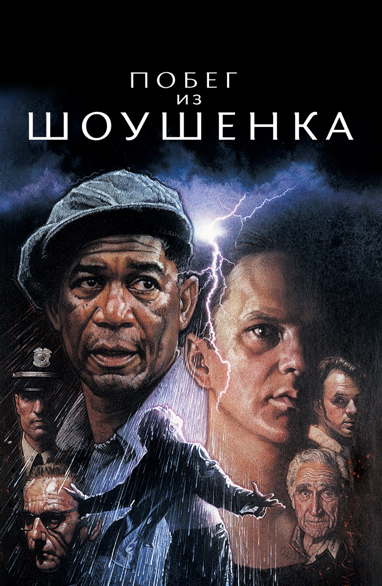

Побег из Шоушунка
«Побе́г из Шоуше́нка» (англ. The Shawshank Redemption) — американский художественный фильм-драма 1994
года, снятый
режиссёром Фрэнком Дарабонтом по его же сценарию, и рассказывающий историю Энди Дюфрейна, незаслуженно
приговорённого к
пожизненному заключению и пробывшего в заключении почти 20 лет. Основой сюжета послужила повесть Стивена
Кинга «Рита
Хейуорт и спасение из Шоушенка». Главные роли сыграли Тим Роббинс и Морган Фримен.